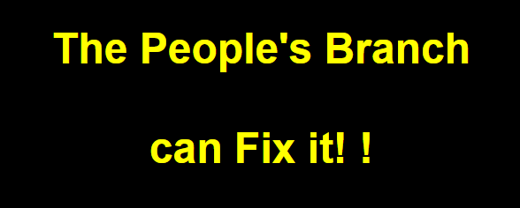

People's Branch


Foundational Elements of the People's Branch
- Digital Infrastructure: A secure framework to host participation platforms, transparency portals, and feedback systems.
- Citizen Collaboration Platforms: Blockchain-secured voting and AI-powered debate tools for citizen input.
- Data-Driven Decision Making: Algorithms analyzing public feedback and societal trends.
- Transparency & Accountability: A live dashboard for tracking government actions and ensuring public oversight.
- Educational Tools: Platforms to educate citizens about governance for more effective engagement.
- AI Moderation: Tools to maintain fairness and inclusivity by neutralizing misinformation.
Integration with Existing Branches
- Empowering Direct Action: Citizens could collectively veto harmful decisions.
- Oversight: Monitor judicial and legislative branches to ensure alignment with public interests.
- Bridging Gaps: Use AI for mediation and ensuring balanced governance.
Challenges and Safeguards
To prevent risks like hacking or digital exclusion:
- Robust Security: Encryption, multi-factor authentication, and audits.
- Inclusivity Programs: Ensuring all citizens can participate, regardless of access or literacy.
- Ethical AI Guidelines: Transparent AI systems overseen by human moderators.